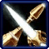
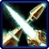
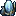
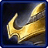
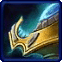
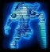
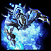

- Stats
- Abilities/Upgrades
- Strategy
- Lore
- Related
Armor: 1 |
 0/0 0 per second
0/0 0 per secondDamage: 45
Attacks: 1
Cooldown: 1.694
Targets: Ground
Attack Range: 0.1 (Melee)
Acceleration: 1000
Collision Radius: 0.375
Requirements: Levels 2-3 requires Twilight Council
| Level |  Level 1 |  Level 2 |  Level 3 Level 3 |
| Minerals |  100 100 | 150 | 200 |
| Vespene Gas | 100 | 150 | 200 |
| Time |  160 160 | 190 | 220 |
| Damage Bonus | +5 | +10 | +15 |
| Total Damage | 50 | 55 | 60 |
125Vespene Cost: 125
Supply:  2
Produced From:Gateway/Warpgate Build Time:
55/5Warpgate Cooldown: 45
Requirements: Dark Shrine
Warp Prism Size: 2
Unit Type: Light, Biological, Psionic, Ground
Requirements: Levels 2-3 requires Twilight Council
| Level |  Level 1 |  Level 2 |  Level 3 Level 3 |
| Minerals | 100 | 150 | 200 |
| Vespene Gas | 100 | 150 | 200 |
| Time | 160 | 190 | 220 |
| Armor Bonus | +1 | +2 | +3 |
| Total Armor | 2 | 3 | 4 |
Requirements: Levels 2-3 requires Twilight Council
| Level | Level 1 |  Level 2 Level 2 | Level 3 |
| Minerals | 150 | 225 | 300 |
| Vespene Gas | 150 | 225 | 300 |
| Time | 160 | 190 | 220 |
| Armor Bonus | +1 | +2 | +3 |
| Total Armor | 1 | 2 | 3 |
| Icon | Minerals | Vespene Gas | Research Time | Researched At |
|  | 0 | 0 | 0 | Already Researched |
Information: The Dark Templar is permanently cloaked, and can only be revealed by detectors or effects that reveal cloaking.
Cloaked units create a shimmering effect over enviorment to let opponents know where they are. The shimmer is difficult to see, but a skilled opponent can spot the shimmer effect to know where the cloaked unit is.
Dark Templars are cloaked while warping in, but still make the warp-in sound. This makes them hard to detect when warping in with other units, but an opponent may hear them warping in if their camera is nearby.
| Icon | Minerals | Vespene Gas | Research Time | Researched At |
|  | 0 | 0 | 0 | Already Researched |
Minerals:
Varies*Vespene Gas: Varies*
Duration:
12Information: Two of any Templar type may sacrifice themselves to merge into an Archon. This can be two High Templars, two Dark Templars, or even one of each. Upon this merge, the original Templars are lost as they become the new Archon.
Archons can be moved while morphing if they become surrounded and are colliding with other units or the environment. This allows a skilled player to break down forcefields while an Archon is still morphing.
See the Archon page for more information about the Archon.
If you have any suggestions for more strategies, go ahead and post on the forums 'here'!
Shift Queue Blinking
Sometimes when you have a large amount of stalkers, blinking can become more difficult and not all stalkers will end up where intended. A way to help this is to queue up a move command (to have the stalkers in range to blink), then the blink, and then another move command (to move the stalkers in front out of the way).
+1 Weapons vs Zerglings
Sum text about how gosu this is
+1 Weapons vs Zerglings
Sum text about how gosu this is
- Overview
- History
- Starcraft 1
- Brood War
- Starcraft 2
General Information
The Dark Templar have "sharper" features than the Khalai, and perceive things differently.
Nerazim often cut off their psionic appendages, and developed the use of special clamps to control the energy bleed. These clamps can also be used for Khalai protoss who lost their own psionic appendages by accident or in battle (particularly with the zerg).
Nerazim technology is similar enough to Aiur technology that these protoss can intuit how to use the technology.
Dark Templar, alone or in groups, have sought xel'naga artifacts
Culture
Driven by individuality and a thirst for knowledge, the Nerazim developed along a very different path than the Khalai. They remain willful and often fiercely independent, with their closest allegiance being first to clannish warrior bands and then to the Nerazim, the great tribe to which all Dark Templar belong.
By their nature the Nerazim are a diverse group of freethinkers motivated by their regard for one another and tribal bonds rather than abstract notions of authority. Different clans take great pains to distinguish themselves through variations in weapons, armor, markings, and dress.
Regardless of clan, reputation and personal responsibility are paramount in the eyes of any Nerazim: individuals must always be accountable for their actions. As a result, deeds rather than words act as the dark templar's guide. Individual clans can be prone to feuding and rivalry, but they are quick to band together against a common threat, such as that presented by the zerg.
The Nerazim maintained the same system of writing as the Khalai. Unlike the Khalai however, female Nerazim are able to become figures of authority.
The xel'naga retain the position of "gods" in Nerazim religion.
Some, if not all Nerazim appear to store their dead in mausoleums and crypts.
Before officially becoming a Dark Templar, one undergoes a Shadow Walk.
The Shadow Walk is an element of Dark Templar culture. Protoss must pass it before officially becoming a Dark Templar. It requires the aspirant to walk down a valley and keep only to the shadows, out of which Dark Templar will spring unexpectedly to assault him/her. Those who make it to the end of the valley without being incapacitated pass the test.
Those who have followed the path of the Khala find it far more difficult to complete the trial and to date, only two individuals who have followed Khas's philosophy have passed, one of which was Tassadar, managing to pass the test through combining his Templar energies with those that Zeratul had taught him.
Psionic Abilities
Dark Templar were taught to hide from the Conclave by the powerful Templar Adun. This ability has been described as "bending light" and "merging with shadows".
Dark Templar wield the energies of the Void. These energies are harmful to the zerg cerebrates and Overmind due to the similarities of the cosmic energies they wield. The Dark Templar consider their powers to be the "true gifts" of the protoss, and consider the Khala to be diluted and narrowed by the (former) leaders of the protoss. Their own powers are considered "wider". Anything that "taints" the Void is considered unholy by the Dark Templar.
Dark Templar are cut off from the preservers; they have no preservers of their own, and their memories cannot be accessed by the preservers. As they are severed from the Khala, communicating with the Nerazim via telepathy requires Khalani to actually be spoken rather than the essence of thoughts being expressed.
A group of protoss survivors stranded on Aiur, the Tal'darim, were cut off from the Khala and developed abilities similar to those of the Dark Templar.
The Discord
Although the Khala ushered in a new era of peace for the protoss following the Aeon of Strife, not all were willing to embrace the new doctrine. These dissidents, known as the Rogue Tribes or the Dark Templar, feared the Khala, believing that they would lose their individuality. The rogues held no ill-will toward their brethren and attempted to live their lives unnoticed as best they could. Nonetheless their existence was known to the Conclave.
Approximately one thousand years before the Great War, the Conclave, under the leadership of Kortanul, had collected records on the locations of the Rogues.
The Conclave ordered the Executor Adun to report to the Conclave so they could tell him about this new threat, which they believed could cause a new Aeon of Strife. Adun was given Raszagal, a young prisoner, to question. He brought her to the Citadel of the Executor so the other Templar could question her. The Conclave gave him their information so he could quietly track down the rogues, abduct them, and execute them.
Adun was unable to bring himself to execute the Rogues. He transmitted fake recordings of the executions to the Conclave and hid the Rogues, even teaching them how to cloak. The Rogues ended up developing these abilities more quickly than Adun could teach them. Unfortunately, the Rogues, still learning their powers, lacked the discipline of the Khala. They inadvertently unleashed psionic storms, which spiraled out of control on Aiur. The Conclave discovered the corpses of dead Rogues, only to realize these Rogues had been depicted in the execution recordings.
The Conclave could neither punish Adun nor slay the Rogues, as he would force them to publicly admit the existence of the Rogues. The Conclave decided to banish the wayward Rogues from Aiur forever on an ancient, but functional xel'naga ship, along with other protoss ships which Adun insisted they be allowed to take with them. However, last-minute squabbling threatened the Rogues, and Adun feared they might accidentally create psionic storms again. Adun created a blue mist with a combination of Khala and strange energies, which covered and protected the Rogues. However, the power caused Adun to burn out like a star.
Shortly afterward it was discovered that the exiles had stolen the powerful Khalis crystal from the Sargas Tribe (the tribe from which most of the exiles stemmed) and taken it with them.
Inevitably some knowledge survived on Aiur and over time the rogues became the subject of myth and legends. Eventually they became known, in legend, as the Dark Templar.
Exile
The Dark Templar journeyed through the stars for a long time, hundreds of years. During this time the creation of the dark archon was banned, and the habit of cutting off their psionic appendages became common. In order to use psionic powers, they were forced to draw energy from the Void. They also developed their fleet of Corsairs, vessels designed to defend themselves as they had traveled through the stars.
The first step on the Dark Templar's journey was the moon of Ehlna, which they discovered shortly after leaving Aiur. It had a xel'naga-crafted warp gate, so the exiled protoss stayed. They discovered the moon had a combination of energies which altered khaydarin crystals, making them quite efficient at storing memories. Without preservers, the Dark Templar had no other way to store memories, so they used this technological means. After more than two centuries, the Dark Templar departed, but some remained to operate a shrine, the Alys'aril, where the memories could be extracted from pilgrims and stored. Numerous vessels remained behind as well.
The Dark Templar eventually discovered the dark planet, Shakuras, during their journeys and remained, due to the presence of a xel'naga temple. They found a warp gate which could be used to travel between Aiur and Shakuras as well as other worlds.
Struggling to adapt to their harsh and nearly lightless environment (protoss feed on light), the Rogue Tribes altered their skills and even their biology to cope.
Some tribes would live in other star systems and aboard small ships.
Eventually Raszagal, age 1045 at the time of the Brood War and one of few Dark Templar who was old enough to clearly remember Aiur, became the Matriarch of the Dark Templar. She ruled for approximately five hundred years before the outbreak of the Brood War.
Reappearance
The Dark Templar learned of the zerg from discovering their probes and from when Sarah Kerrigan, undergoing a transformation in a chrysalis, was transported to Char. Kerrigan released a psychic plea for help to former comrades, drawing the attention of both Tassadar (a high templar) and the Dark Templar.
The Dark Templar were greatly concerned about the zerg and chose to test themselves in battle against small bands of zerg on Char. The zerg proved frighteningly resilient and numerous, and so the Dark Templar brought the Khalis to Char so that they might try to wield its energies against them.
Zeratul, a Dark Templar leader and adventurer, encountered Tassadar. The two protoss leaders eventually joined forces against the zerg. They hatched a plot to conduct a weapons test against cerebrates, brain-like zerg which control broods which were effectively immortal, since the Overmind could reincarnate them from any injury, even death; the plot involved fooling the new zerg agent, Infested Kerrigan. The test was successful; Zeratul slew the cerebrate Zasz. This formed a psychic connection between him and the Overmind; Zeratul learned of the Overmind's plans, and the Overmind learned the secret location of Aiur from Zeratul in a form usable to it.
Kerrigan was dispatched to deal with the protoss. She inflicted heavy defeats on them, and they were forced to flee. They lost the Khalis crystal. Most of the zerg then traveled to Aiur. Kerrigan captured Zeratul and the other surviving Dark Templar, but Tassadar escaped. Tassadar later returned with reinforcements and rescued the Dark Templar; he convinced them to return to Aiur and help fight the zerg that plagued that world.
Return to Aiur
The return of the Dark Templar to Aiur, working alongside members of the Templar Caste such as Tassadar and Fenix sparked a civil war between Tassadar and the Conclave. The Conclave did not believe the stated reason of the Dark Templar for being on Aiur (the ability to destroy cerebrates). Before the Dark Templar could attack the zerg, first they had to defeat the Conclave in battle. Tassadar's forces destroyed the "Heart of the Conclave", but the canny Aldaris took Tassadar prisoner. The Dark Templar vanished, causing Fenix to lose faith in them, but they returned in time to rescue Tassadar from the Conclave.
Zeratul later slew two cerebrates, weakening the zerg forces on Aiur. The Conclave saw the results of this and admitted they were wrong about the Dark Templar. However, they were unable to provide backup. Tassadar's forces launched an attack on the Overmind; after a desperate battle, Tassadar charged himself up with Dark Templar energy and crash-landed his carrier Gantrithor into the Overmind, destroying it.
A Second Exile
Tassadar's sacrifice had a strong negative effect, unfortunately; the zerg went insane and slew most of the protoss. Zeratul offered the Dark Templar homeworld of Shakuras as a refuge for the protoss; Aldaris reluctantly agreed with him. The Khalai refugees fled through a warp gate to Shakuras. They established a new settlement. The zerg managed to follow them. At least two cerebrates established themselves on Shakuras. These cerebrates were slain by Dark Templar, but the zerg maintained their grip on Shakuras. Infested Kerrigan surprised the protoss by appearing on Shakuras and offering an alliance. She said the cerebrates were servants of a second Overmind growing on Char and were her enemy. If the second Overmind reached maturity, it would take control of her, turning her (once again) into a horrible murderer. Raszagal accepted her surprising offer, but Aldaris was offended and vanished.
Raszagal said that the xel'naga temple on Shakuras could slay all the zerg there, but only if the protoss could acquire the Uraj and Khalis crystals. Zeratul, the new protoss praetor Artanis and Infested Kerrigan cooperated in acquiring these crystals. They hurried back to Shakuras, fearing the zerg had conquered it in the meantime.
Aldaris' Rebellion
When the heroes returned to Shakuras, they were shocked to find the planet gripped in civil war. Aldaris had taken control of large numbers of protoss from Aiur and rebelled against Raszagal, who ordered the destruction of the revolt. Zeratul felt something was wrong with Raszagal, who was normally gentle, but followed her orders. Artanis followed Raszagal in deference to Aldaris. Raszagal's forces defeated Aldaris, who then attempted to explain his reasoning for the revolt - Infested Kerrigan had taken control of Raszagal's mind - when Infested Kerrigan suddenly appeared and killed Aldaris. The shocked protoss evicted her from the planet.
Raszagal claimed that with Infested Kerrigan gone, her mind had been freed from her hold. The remaining protoss combined forces and seized the xel'naga temple, which had once again been surrounded by the zerg, and activated it, wiping the zerg from the face of Shakuras.
Ulrezaj's Rebellion
A combined Templar and Dark Templar force left Shakuras to conduct a mission on Aiur; the rescue of a number of wounded protoss warriors abandoned in stasis cells on the world. The protoss had to fight their way past zerg colonies to do so, but when they reached the stasis cells, a quartet of Dark Templar appeared and destroyed two of them (killing the protoss within). They were forced to surrender before they could destroy the third cell.
These Dark Templar were led by Ulrezaj, who hated the thought of harboring Khalai on Shakuras. He claimed that slaying the high born Templar was a sacred act. In a demonstration of protoss unity, a tribunal consisting of protoss from Aiur and Dark Templar sentenced Ulrezaj to imprisonment. The trial was interrupted by an attack of terrans. Early in the attack, they freed Ulrezaj and his minions, who stole a number of khaydarin crystals before fleeing.
Ulrezaj had created an alliance with Alan Schezar and his Scavengers, who had previously used khaydarin crystal-based techniques to control a cerebrate and thus an entire brood. Their plots included using warped khaydarin crystals to control and mutate zerg until they could withstand the power of the xel'naga temple and to use a powerful EMP Generator during battle against the protoss of Shakuras. Their plan involved unleashing the enhanced zerg upon Shakuras, which would cause the Dark Templar to flee to their hidden places, leaving the protoss from Aiur exposed to assault. However, the plan partially failed; a combined Khalai/Dark Templar force destroyed his warped crystals.
Ulrezaj and Schezar still tried the second part of their plan, using the EMP Generator to weaken the opposing protoss forces, while Schezar's Scavengers and the Fist of Ulrezaj attacked, but they were defeated.
Web of Treachery
Infested Kerrigan had unfinished business with the protoss. She returned in force after greatly enhancing her forces with assistance from unlikely allies. Her forces directly assaulted the capital, Talematros. The xel'naga temple was not activated during the battle. Despite the capital's formidable defenses, her minion Infested Duran discovered a weak point and destroyed the city. During the confusion, the zerg kidnapped Raszagal.
Zeratul, backed up with other protoss forces, arrived at Char, exceedingly angry at the kidnapping. Kerrigan proposed a deal; if Zeratul would help her kill the second Overmind, she would allow Raszagal to return. Raszagal herself helped convince Zeratul of the dangers of the Overmind.
Kerrigan's Swarm and a number of Dark Templar battled with the second Overmind's zerg and their United Earth Directorate masters and won a hard-fought victory. Zeratul personally slew the second Overmind. He then asked for the return of Raszagal, who appeared but refused to return. She was obviously still under Kerrigan's control. Zeratul "counter-kidnapped" Raszagal and fled with her.
The Future
Kerrigan was not willing to let Raszagal escape. Her forces descended from Char's orbital platform in order to sweep the planet before Zeratul could initiate dimensional recall and whisk Raszagal back to Shakuras. She found the base where the protoss were keeping Raszagal within a stasis cell and destroyed the base. Zeratul himself appeared, destroying the stasis cell and killing Raszagal. Before she died, Raszagal told Zeratul that she was finally freed of Kerrigan's control and "into your hands, I place the future".
The Future, In Limbo
The protoss scattered from Char in the wake of their heavy defeat. Kerrigan allowed Zeratul to depart unharmed. In the proceding years, leadership of the recombined protoss civilization fell to Hierarch Artanis. Artanis struggled to maintain unity against the deep-seated distrust and resentment between the Khalai and Nerazim. Raszagal's name was frequently invoked to keep the peace.
The prior zerg invasion of their world caused the Dark Templar to become more battle-hardened, and drove the development of new weapons. Among these were the stalker combat walkers, inspired by the Khalai dragoon and the void ray gunship. Although the Nerazim were counted as part of the Daelaam—a united protoss people, internal tensions led to tribalism in both the Nerazim and Khalai, Eventually the protoss split into different factions.
Source Information
Text information from the Starcraft Wiki.
Photo 1 created by Saejin Oh. Copyright: UDON Entertainment.
Photo 2 created by Samwise Didier. Copyright: Blizzard Entertainment.
| Protoss |
| Units |
| Nexus | Probe | Mothership |